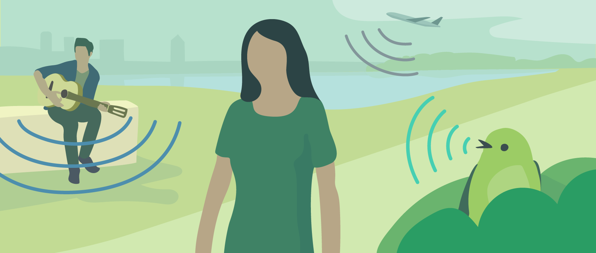
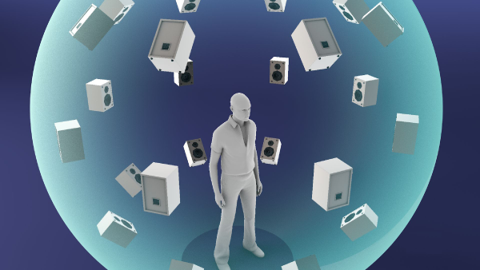

空间音频是什么？
空间音频很多地方也叫做三维音频，它源于我们人据有分辨声音来源方向的能力。虽然一直是比较冷门的研究方向，但在VR的发展下，空间音频也火了一把，很大程度是因为空间音频在在VR的应用所讲究的沉浸感中扮演着极为重要的作用，当声音的方向与画面不匹配的时候，沉浸感会荡然无存，所以高品质的空间音频也成为了VR研究中很重要的一环。

https://developers.google.com/resonance-audio/discover/overview
HOA?
HOA 全称是 Higher Order Ambisonics，强硬的翻译的话就是高次混响。它最初的目的是要重建空间中声场的分布。我们可以想象一个空间中的一个球面，我们在球的中心，那么从球外传来的声音会在这个球面上有一个投影，这让我们想到，我们可以把球面以外的声音都无视掉，并假设声源分布在这个球面上。用球面上的声源产生的声场来拟合原来生源产生的声场。HOA就是一个这样去拟合声场的方法。

https://developers.google.com/resonance-audio/discover/concepts
一些基本概念
球面调和函数 Spherical harmonics
球面调和函数并不好理解，有机会可以详细的聊一聊，这里只做最最最抽象的介绍，力求知其然不求知其所以然。
这里要做的是类比一下傅里叶变换。我们通常接触的函数都是分布在一维的，每一个$x$对应一个$f(x)$，我们对$f(x)$进行傅里叶变换会得到$F(\omega)$。现在我们的目标是一个在球面上分布的函数，我们使用一个球坐标系，球面上的点$(r,\theta,\phi)$，而对于一个固定大小的球，$r$是一个定值，我们可以暂时只关注$\theta$和$\phi$，那么对于每一组$(\theta,\phi)$对应一个$f(\theta,\phi)$。傅里叶变换可以将时域信号转化到频域，这样方便我们分析特定频域的信号，对于$f(\theta,\phi)$，我们只想知道这个函数在空间中一个大概的分布，所以$f(\theta,\phi)$记录的东西无疑太多了，所以我们可以把它转换为$F_n^m$，这里的$n$和$m$就类似与傅里叶中的 $\omega$。当我们只需要粗略的空间分辨率时，很小的$n$就足够，当需要更精细的空间分辨率时，就需要较大的$n$时的$F_n^m$，它们会对小的$n$的$F_n^m$的空间的缝隙中进行插值，使空间的分辨率增高。通过球谐分解，我们可以把球面上的函数用更少的数值表达。就如下面这张图，从上至下$n$逐渐增大，对空间的描述能力也逐渐增强。

格林函数 Green function
格林函数用于描述在开放空间中（没有障碍物没有反射折射）一个声源到空间另外一点的响应。用$x_0$表示声源的位置，$x$点的声强为$p(\omega) = \dfrac{e^{i\omega|x-x_0|}}{4\pi|x-x_0|}$。$\omega$表示声音的频率，格林函数同样有在时域上的表达，可以看作是一个延时函数。
HOA!
UNDER CONSTRUCTION…
行路难·其一
李白
金樽清酒斗十千，玉盘珍羞直万钱。停杯投箸不能食，拔剑四顾心茫然。
欲渡黄河冰塞川，将登太行雪满山。闲来垂钓碧溪上，忽复乘舟梦日边。
行路难！行路难！多歧路，今安在？长风破浪会有时，直挂云帆济沧海。